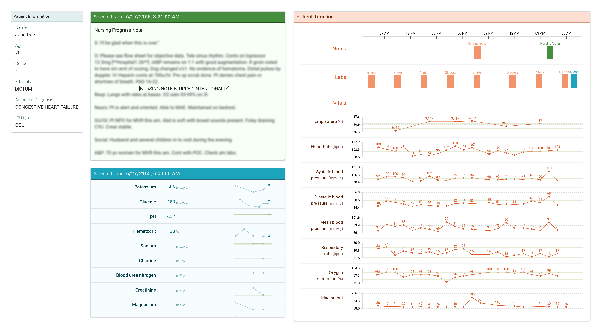

ClinicalVis
An open-source proof of concept visualization for EHRs
ClinicalVis visualizes single-patient Electronic Health Record (EHR) data in an intuitive, easy-to-read format for rapid information assimilation in realistic, task-focused scenarios. It supports the inference of insights from multiple clinical signals for clinical preparedness. ClinicalVis was built, evaluated and open-sourced to add to the body of research on evaluating Healthcare Provider (HCP) interactions with EHR visualizations.
The Visualization

Simple, scalable and supportive
We built on strong body of prior work on designing visualization-based systems and prototypes that support teamwork in healthcare coordination and patient-level healthcare management. While there are many promising, commercial EHR visualizations, we found that duplicating the evaluations conducted on closed-source systems are difficult, and experiments on care planning in a task-oriented setting are hard to reproduce. So we set out to change that with ClinicalVis.
ClinicalVis was designed keeping in mind known and observed HCP workflows, and we use simple visualizations that can be easily read with little onboarding. It is scalable to include a range of variables, and can be used more generally to investigate during- and post-task clinical usage of ICU EHRs.
The Study
How do healthcare practitioners engage with visual representations of real patient EHR data during task-focused care planning?
Do visual representations of EHRs influence clinical care planning?
Do visual representations of EHRs influence clinical care planning?
We evaluated the interactions of 14 healthcare providers with electronic health records using ClinicalVis in a mixed-methods user study. Participants were asked to plan care in a remote eICU scenario for 16 patient cases sourced from the MIMIC-III database, using ClinicalVis and a baseline prototype, designed to emulate commercially available EHR softwares. We looked for qualitative behaviors and interaction patterns to assess workflow integration, and captured metrics such as accuracy, self-reported confidence, time to task and task load.
Findings
Overall EHR-to-task performance was generally poor
While task performance (characterized by increased accuracy and/or lower time-to-decisions) on ClinicalVis was slightly better than on the baseline, we found that overall performance was generally low. We find that EHRs are fundamentally limited for care planning, and the data concerns associated with them directly affect HCPs.
Better visualizations improved HCP performance
Participants preferred ClinicalVis over the baseline, reporting better TLX scores. ClinicalVis integrated well into clinician workflows, as they started to engage with the EHRs in a data-first way. Further, they believed that the content had been altered in ClinicalVis for better performance, when it had not.
Maximizing time for decision validation, not information finding
Healthcare providers spend time post-decision for validation in ClinicalVis, as opposed to time spent locating information in the baseline. We also noted that validation practices supported pre-existing heuristic methods and increased caution in decisions.
Future Work
The design implications of our work suggest that modeling clinical data for decision support should include elements to guide clinical use. We believe that ClinicalVis can open up avenues for the rigorous evaluation of interactions between clinicians and patient data to improve aspects of healthcare delivery.
To that end, we have open-sourced ClinicalVis and are publishing our findings, hoping that you can take our visualization and apply or extend it in your own research.
To that end, we have open-sourced ClinicalVis and are publishing our findings, hoping that you can take our visualization and apply or extend it in your own research.
This demo is optimized for the Chrome browser and is best viewed at 2560 x 1440. Please allow a few seconds to load.
People
Authors & Affiliations
Marzyeh Ghassemi - University of Toronto, Verily
Mahima Pushkarna - PAIR, Google AI, Cambridge
James Wexler - PAIR, Google AI, Cambridge
Jesse Johnson - Sanofi Genzyme, Verily
Paul Varghese - Verily
Mahima Pushkarna - PAIR, Google AI, Cambridge
James Wexler - PAIR, Google AI, Cambridge
Jesse Johnson - Sanofi Genzyme, Verily
Paul Varghese - Verily
PAIR
The People + AI Research initiative (PAIR) brings together researchers across Google to study and redesign the ways people interact with AI systems. We focus on the "human side" of AI: the relationship between users and technology, the new applications it enables, and how to make it broadly inclusive. Our goal isn't just to publish research; we're also releasing open source tools for researchers and other experts to use.
Acknowledgements
ClinicalVis was a collaborative effort between PAIR (Google) and Verily. We would like to thank all our colleagues and study participants that piloted the visualization and provided valuable feedback.
This is not an official Google product